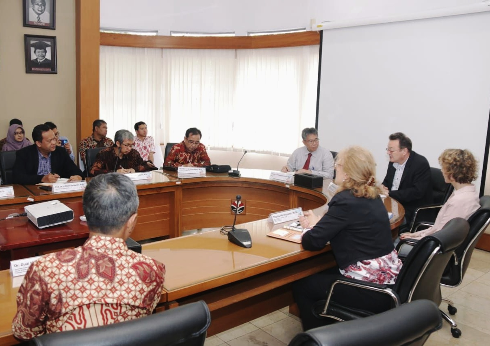
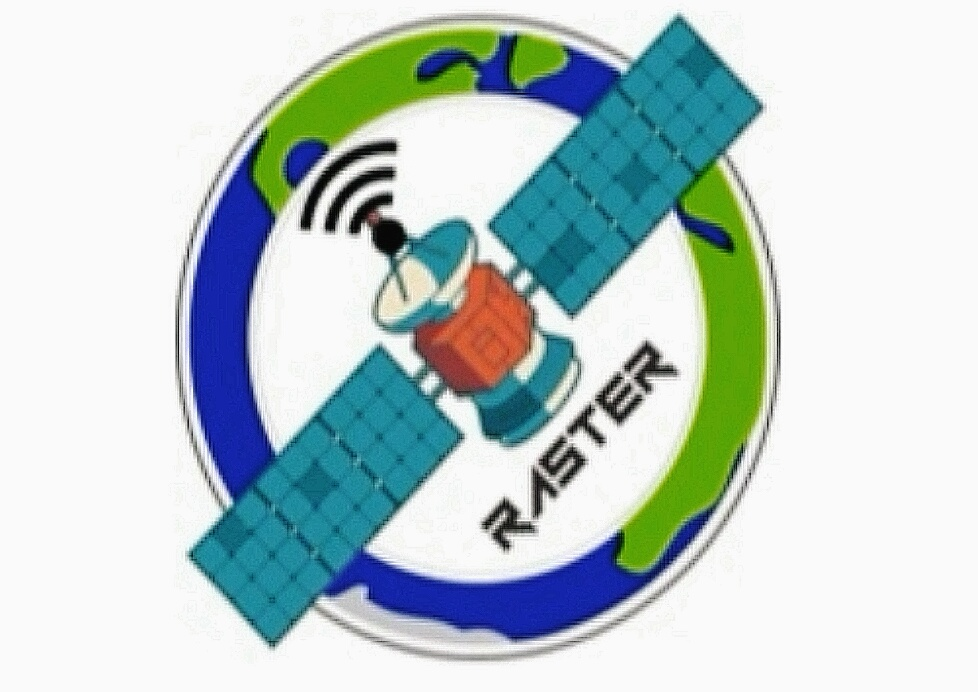
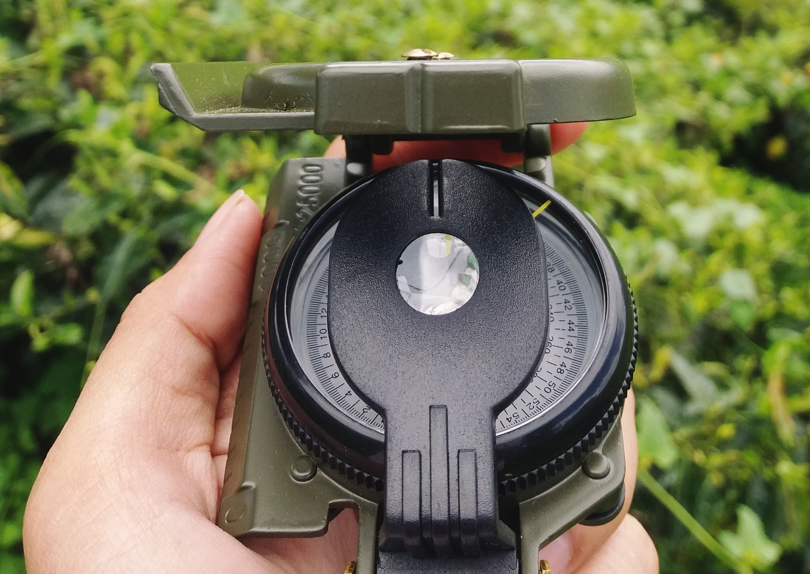
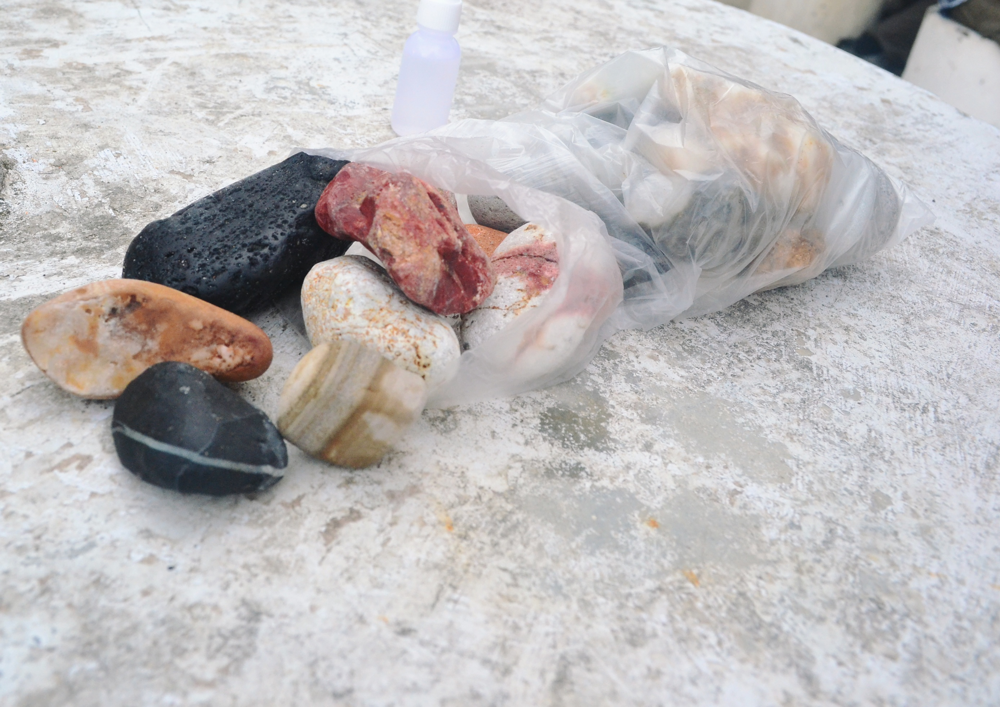

FAKTA MENARIK JURUSAN SAINS INFORMASI GEOGRAFI UPI
Kuliah hingga ke perguruan tinggi adalah sebuah perjuangan, jangan bandingkan proses seseorang dengan orang yang lainnya, karena tak semua bunga tumbuh dan mekar bersamaan.
Saya Rahma Nur Hasanah, mahasiswi yang sedang menempuh semester 4 di jurusan yang sangat istimewa yaitu Sains Informasi Geografi Universitas Pendidikan Indonesia. Banyak fakta-fakta menarik dan istimewa yang perlu diketahui mengenai jurusan yang langka di Indonesia ini.
1. Jurusan yang baru berumur 2 tahun ini didirikan pada tahun 2018, dan menerima mahasiswa melalui dua jalur yaitu SBMPTN dan Jalur Mandiri pada tahun 2018.
2. Nama sains informasi geografi ini bisa dikatakan langka di Indonesia, karena prodi bernama sains informasi geografi ini hanya ada satu di Indonesia, berbeda dengan Universitas Gajah Mada, karena nama sains informasi geografi yang dimilikinya berada di tingkatan departemen, sebenarnya sudah banyak jurusan bernama sains informasi geografi yang ada di luar negeri.

3. Walaupun baru tetapi jangan salah, SaIG sudah mengikuti Akreditasi Internasional yaitu AQAS dari Jerman yang telah dilaksanakan awal tahun 2020.


4. Istimewanya gelar saya setelah lulus adalah sarjana geografi, yang baru ada pertama kali di Indonesia, dan gelar satu-satunya.. ya dari SaIG UPI ini.
5. Di jurussan ini ada 9 komunitas, dan kegiatan mahasiswa lainnya, sebagai wadah untuk menampung, serta menyalurkan keilmuan, kreativitas, dan jiwa kepemimpinan yang banyak bekerjasama dengan berbagai instansi untuk mempersiapkan kita di masa kerja.


6. Adanya pengenalan saig, melalui narasi di laman SAIG UPI, yang ditulis langsung oleh mahasiswanya menjadi magnet yang dapat memberikan gambaran, suara, serta sapaan yang takakan hilang dan mati.
7. Kembali ke lapangan. dengan praktikum ke luar kampus seketika mengisi energy kami, alam yang dirindukan seakan memberikan nafas, juga seakan memberikan pelajaran dan gambaran keaadaan dunia yang nyata.


8. Faktanya..jurusan SMA dari IPA atau IPS, bahkan SMK bisa mendaftar masuk ke jurusan SaIG ini dan menariknya..ada mata kuliah yang memiliki latar belakang ilmu soshum dan saintek, dijurusan ini dua keilmuan tersebut bersatu.
9. Di perkuliahan pun bahkan ada mata kuliah fisika. sebenarnya mulai dari social, teknik maupun sains kami belajar itu semua mungkin, ada yang bingung kenapa jurusan ini ada di fakultas pendidikan ilmu pengetahuan social?
Adanya SaIG di fakultas sosial ini bahkan tidak menjadi halangan bagi kami, karena akan menghasilkan analis geograf yang dapat menganalisis secara teknik fenomena alam atau non alam, namun tidak lupa membawa aspek sosial nya, sehingga hasilnya akan tepat sasaran dan tidak merugikan.
Hidup adalah belajar, mau tidak mau.. kita akan selalu belajar, proses ini akan menuju pada suatu tujuan yaitu membuat diri kita menjadi lebih baik dan sebaik baiknya manusiaa adalah yang bermanfaat untuk orang lain.
Penulis : Rahma Nur Hasanah